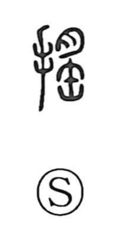

揺

Uncategorized
Kun: yureru, yuru, yuragu, yurugu, yusuru, yusaburu, yusuburu, ugoku | On: yo
to shake ・ to sway ・ to move
Explanation
The earliest form is 搖, a phono-semantic compound: the hand radical marks a manual action, while the right-hand element functions as the phonetic that gives the On reading yo. In that element, 夕 (later written as 月) represents meat placed on a narrow-mouthed earthenware jar (缶), with the mass unsteadily bulging over the rim—an image of wobbling instability. Shuowen glosses it simply as “to move,” and from this picture of an unsteady, overflowing mass the senses “to shake,” “to sway,” and more generally “to move” naturally developed.